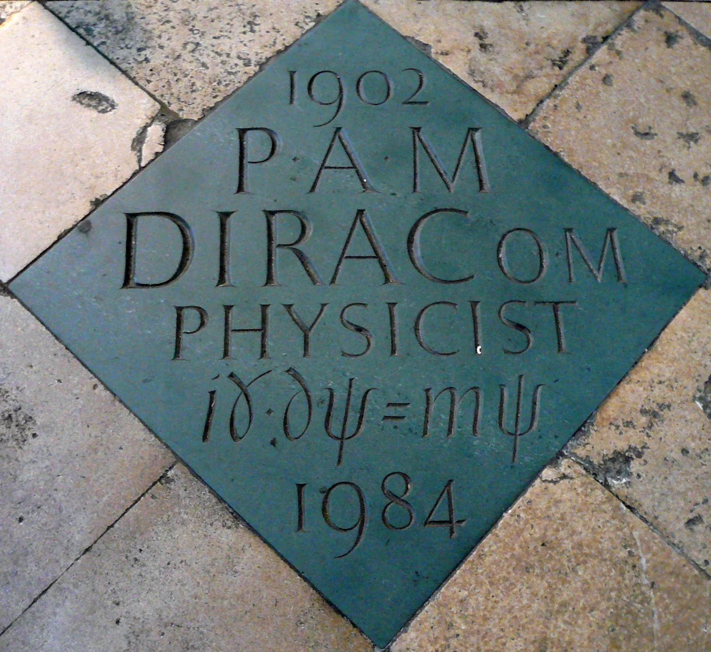
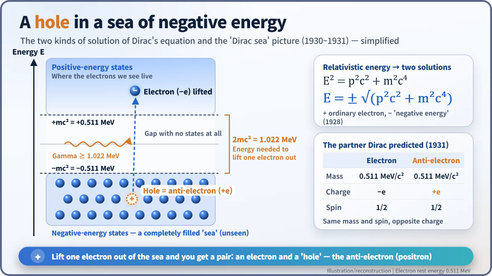
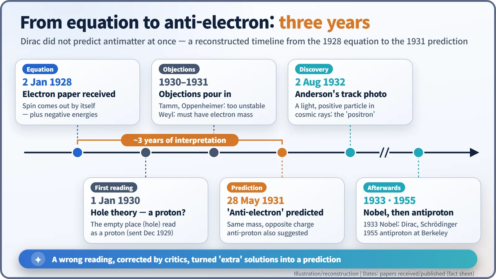

Nuclear History · 040
The Answer That Wouldn't Go Away — Dirac's Equation and the Prediction of Antimatter (1928)
An equation that refused to drop its 'extra' answers took three years of wrong turns to reveal a mirror twin of the electron.
In January 1928 Paul Dirac wrote down an equation for the electron that obeyed both quantum mechanics and special relativity. It explained the electron's spin for free, but it also produced puzzling "negative-energy" answers. After about three years of wrong turns and criticism, Dirac concluded in 1931 that those answers pointed to a new particle with the electron's mass and the opposite charge: the anti-electron, the first piece of antimatter.
An equation set in stone
Set into the floor of the nave of Westminster Abbey in London, close to Isaac Newton's monument, is a green slate diamond. The inscription is brief: "1902 P A M DIRAC OM PHYSICIST 1984", and in the middle a single line of mathematics, iγ·∂ψ = mψ. The stone was unveiled on 13 November 1995 in honour of the English physicist Paul Dirac (1902–1984), who is buried in Tallahassee, Florida. Memorials rarely carry equations. What did this one do to earn its place among kings and poets? [4]

Quantum mechanics had a speed problem
By 1926 quantum mechanics looked almost finished. Schrödinger's wave equation described electrons in atoms beautifully. But it had one large gap: it did not respect Einstein's special relativity, so it broke down for electrons moving at a sizeable fraction of the speed of light. And the electron's spin — the fact that it behaves like a tiny magnet — had to be bolted on by hand to match experiments.
At Cambridge, the 25-year-old Dirac, famous for saying almost nothing, set out to fix both at once. He wanted an equation that treated time and space on the same footing while keeping the probability interpretation intact. The result, "The Quantum Theory of the Electron", was received by the Proceedings of the Royal Society on 2 January 1928 and published on 1 February. [1]
A rabbit from a hat — and an unwanted guest
Remarkably, spin simply fell out of the mathematics. Nobody had to assume it: the equation demanded that the electron have spin 1/2. The American physicist John Van Vleck likened the feat to a magician pulling rabbits out of a silk hat.
But the hat held something else too. In relativity, energy obeys E² = p²c² + m²c⁴, so taking the square root gives two answers: E = ±√(p²c² + m²c⁴). One is the ordinary positive energy; the other is negative. In classical physics you can throw the negative answer away. In quantum mechanics you can't: an electron could drop into those negative states, releasing energy, and every atom ought to collapse almost instantly. [5]
A full sea with one hole — first mistaken for a proton
Late in 1929 Dirac proposed a bold picture, published on 1 January 1930 as "A Theory of Electrons and Protons". Suppose all the negative-energy states are already filled with electrons. Because no two electrons can occupy the same state (Pauli's exclusion principle), ordinary electrons cannot fall into this "sea". And since the sea is always the same, we never notice it. [2]
Now remove one electron from the sea. Like an empty space in a packed car park that catches the eye, the vacancy behaves like a particle with positive energy and positive charge. The only positively charged particle known at the time was the proton, so Dirac suggested that these "holes" were protons.

The objections came quickly. Igor Tamm and Robert Oppenheimer pointed out that if holes were protons, they would meet electrons and annihilate far too quickly — even a hydrogen atom could not survive. Hermann Weyl showed that a hole must have exactly the same mass as an electron, whereas a proton is about 1,836 times heavier. [3]
1931: enter the anti-electron
Dirac changed his mind. In "Quantised Singularities in the Electromagnetic Field", received on 28 May 1931, he wrote:
"A hole, if there were one, would be a new kind of particle, unknown to experimental physics, having the same mass and opposite charge to an electron. We may call such a particle an anti-electron."
He even explained why nobody had seen one: anti-electrons would quickly recombine with ordinary electrons. Produced in a high vacuum, however, they "would be quite stable and amenable to observation." He suggested that two hard gamma rays colliding could create an electron and an anti-electron together, and in the same paper speculated that protons should have their own counterpart, an "anti-proton". As the diagram shows, lifting an electron out of the sea takes at least the width of the gap: 1.022 MeV. [3]

A common myth deserves correcting here. Dirac did not see antimatter at a glance in 1928. He refused to discard the equation's extra answers, tried a wrong interpretation (the proton), and corrected it in response to colleagues' criticism. The prediction took a little over three years.
What came next
In 1932 Carl Anderson at Caltech photographed a particle in cosmic rays (high-energy particles from space) that was as light as an electron but curved the opposite way in a magnetic field. Anderson later recalled that he had not been hunting for Dirac's particle; his discovery is a story of its own. Dirac shared the 1933 Nobel Prize in Physics with Erwin Schrödinger, and the antiproton was found in 1955 at the Bevatron accelerator in Berkeley, California. [6]
Today the anti-electron, now called the positron, works in hospitals every day. In PET (positron emission tomography) scans, a positron from a tracer drug meets an electron and the pair annihilates, sending out two 0.511 MeV gamma rays in opposite directions that the scanner detects. But antimatter is no dream fuel. According to CERN, annihilating a whole year's output of its antiprotons would release only about 500 joules — enough to light a 100-watt bulb for about five seconds — and making them takes vastly more energy. [5]